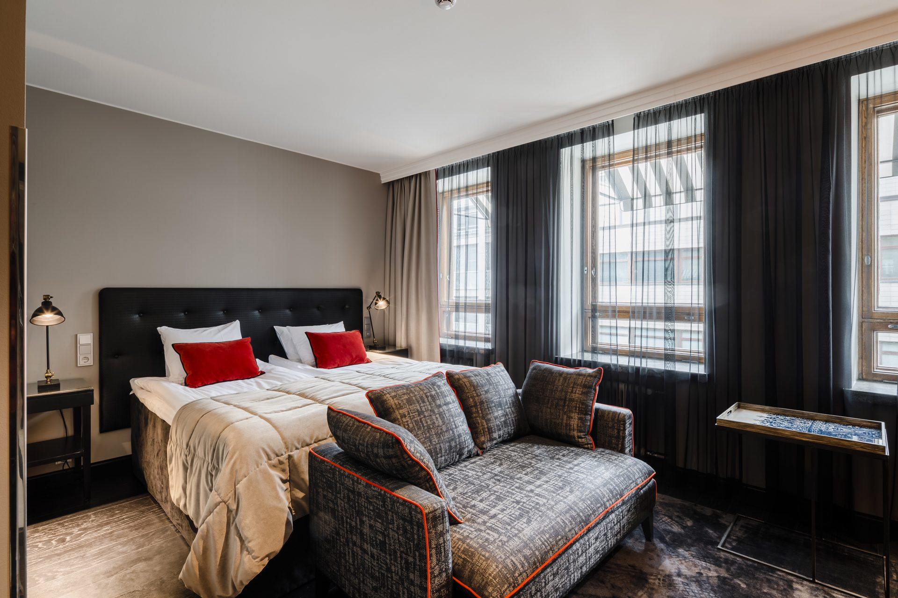
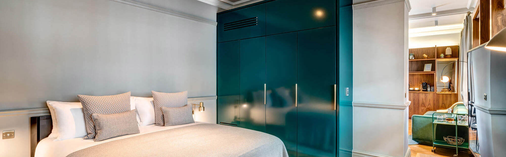
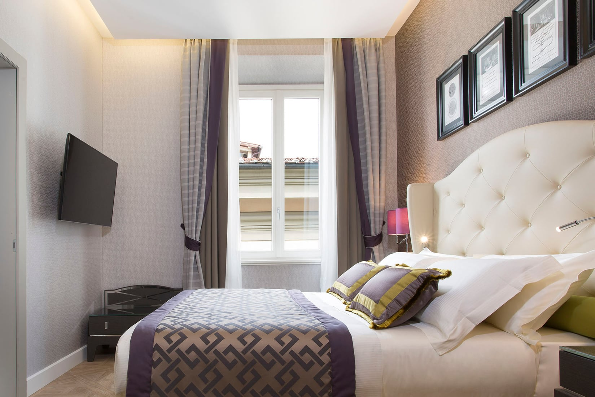
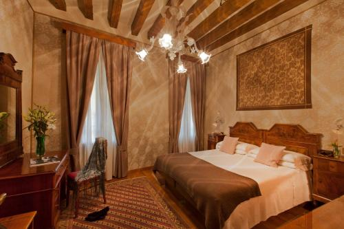
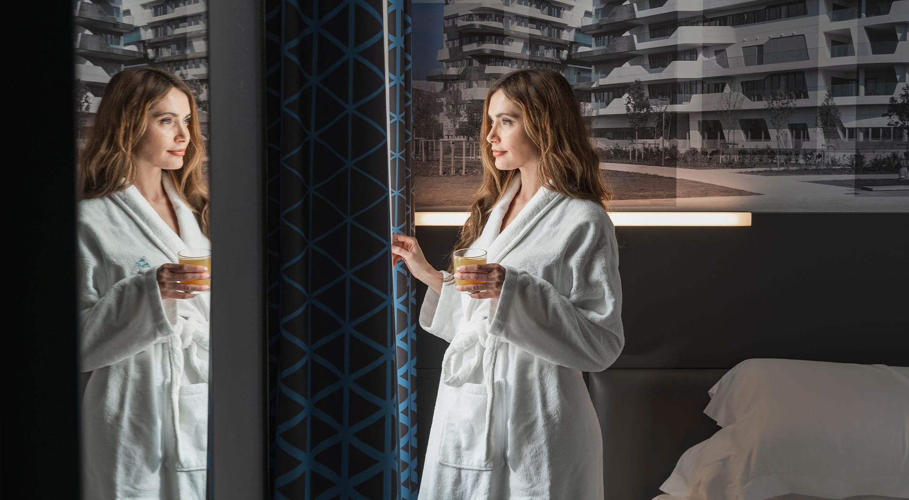
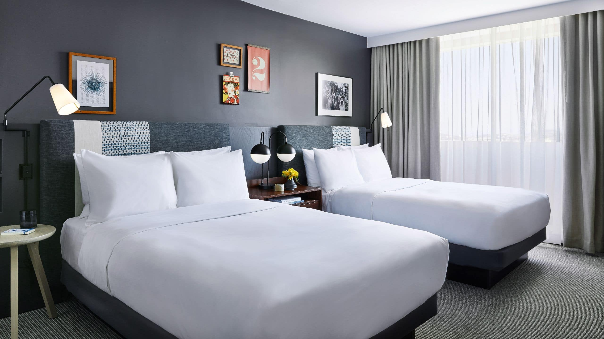
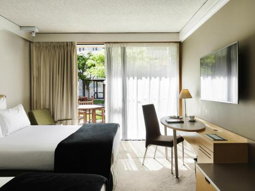

先に結論
現行ホテル計画枠非公開
第一候補の比較帯非公開〜非公開
理論上の差非公開〜非公開
現実的な削減目標約40〜80万円
先に比較する5都市：ルツェルン、ローマ、フィレンツェ、ドゥブロヴニク、サンフランシスコです。品質を大きく落とさず、立地のプレミアムや眺望代を削りやすい場所です。
現行維持が合理的：ヘルシンキ、ミラノ、クイーンズタウン。特にNovotel Queenstown Lakesideは、平坦な湖畔立地と26㎡・2 Double Bedsを考えると、少額差で替えるメリットが小さいです。
金額の意味：候補価格は日付未定段階のスクリーニング帯で、予約価格の確約ではありません。実行時は同一日・同一人数・同一ベッド・取消条件・朝食・税・現地追加料金まで揃えて再検索します。
選んだホテルで宿泊費を比較
各ホテルカード下部の「この宿を選択」を押すと、宿泊総額と現行計画枠との差が更新されます。選択はこのブラウザ内に保存され、次に開いたときも復元されます。
現行宿泊計画枠—
選択後の宿泊概算—
現行からの削減額—
読み込み中
概算は、現行ホテルはページ記載の現行1泊枠、変更候補は表示価格帯の中央値を1泊単価として泊数を掛けています。税・朝食・現地追加料金・為替差は含みません。
国・都市別の変更リスト
差額は候補価格帯と現行計画枠の比較。価格帯上限が現行を超える場合は、節約額を0として表示しています。
候補を国別に見る
各候補に、施設水準と「お二人の45日旅への適合度」を別々に表示しています。施設水準は現地最高級を10、一般的ホテルを4〜6とする既存基準です。
第一候補現行維持候補比較候補条件付き
フィンランド
現行ホテルが基準として優秀。価格差が小さければ無理に替えない。
ヘルシンキ｜3泊
現行ホテル：Scandic Helsinki Station
比較のみ現行枠 非公開／泊
変更ルール：Hotel Helkaが朝食込みで現行より5,000円以上安い、またはGrand Centralが同額なら変更候補。
現行ホテルと最初に見る候補同一日・同一ベッド・取消条件で最終比較
現行ホテルScandic Helsinki Station
スカンディック・ヘルシンキ・ステーション

客室参考写真（出所を開く）朝食条件ありツイン・2ベッド立地に強み対応を確認
現行枠 非公開／1室泊
ベッドStandard 20㎡。ツイン可否は予約画面で確定立地中央駅・地下鉄約0.1km、空港鉄道の到着後に動きやすい朝食館内朝食。料金・込み条件を日付指定で確認
良い点：駅至近、20㎡、サウナ・24時間ショップがあり、長距離到着後の回復拠点として強い。
注意：客室カテゴリーはKing表記もあるため、ベッド分離を料金プランで必ず確定する。
根拠・予約前の口コミ確認
公式で確認: 公式は中央駅至近、Standard 20㎡、朝食・サウナを案内。
直近レビューで確認: 中央駅側の客室位置、朝食混雑、ツインの確約表記
朝食条件ありツイン・2ベッド立地に強み
非公開〜非公開／1室泊
ベッドStandard Twin・シングルベッド2台立地中央駅徒歩約10分、Kamppi近く朝食プランにより朝食込み。ベジタリアン等にも対応
良い点：北欧デザイン、サウナ、朝食評価、中心立地のバランスが良い。
注意：駅直結ではない。雨天・荷物ありでは現行より少し不便。
根拠・予約前の口コミ確認
公式で確認: 客室・設備・アクセス
直近レビューで確認: 清掃、遮音、夜間到着、部屋指定
ほかの比較候補を見る（2軒）
比較候補Scandic Grand Central Helsinki
スカンディック・グランド・セントラル・ヘルシンキ
朝食条件ありツイン・2ベッド立地に強み
非公開〜非公開／1室泊
ベッドSuperior Twin等・ツインベッド明記立地中央駅に隣接、空港鉄道との相性が最高朝食Scandic標準の朝食。料金条件を比較
良い点：現行ホテルに最も近い思想で、建築・移動・安心感を一段上げられる。
注意：日によって現行より高い。部屋位置で眺望・静けさが変わる。
根拠・予約前の口コミ確認
公式で確認: 客室・設備・アクセス
直近レビューで確認: 清掃、遮音、夜間到着、部屋指定
条件付きRadisson Blu Plaza Hotel Helsinki
ラディソン・ブルー・プラザ・ホテル・ヘルシンキ
朝食条件ありツイン・2ベッド立地に強み
非公開〜非公開／1室泊
ベッドStandard Twinあり立地中央駅横、アテネウムやOodiへ徒歩圏朝食有料／込みプランを比較
良い点：駅近と上級感を両立。価格が下がる日だけ有力。
注意：朝食込み・取消可能条件では割高になりやすい。
根拠・予約前の口コミ確認
公式で確認: 客室・設備・アクセス
直近レビューで確認: 清掃、遮音、夜間到着、部屋指定
イギリス
Covent Gardenの立地を維持しつつ、大型ホテルのツイン在庫を狙う。
ロンドン｜4泊
現行ホテル：The Resident Covent Garden
変更しやすい現行枠 非公開／泊
変更ルール：Strand PalaceのSuperior Twinが6万円台前半以下なら優先。Residentとの差が小さければ現行維持。
現行ホテルと最初に見る候補同一日・同一ベッド・取消条件で最終比較
現行ホテルThe Resident Covent Garden
ザ・レジデント・コヴェント・ガーデン

客室参考写真（出所を開く）朝食条件ありツイン・2ベッド立地に強み予約条件を確認
現行枠 非公開／1室泊
ベッドキングまたはツイン対応のカテゴリーを指定。室内ミニキッチン立地Covent Garden中心。劇場・Trafalgar Square方面へ徒歩圏朝食朝食内容・料金は予約条件で確認
良い点：観光と食事の中心地で、ミニキッチンが4泊の休憩・軽食に効く。
注意：小規模ホテルのため、部屋サイズとツイン在庫を早めに確認する。
根拠・予約前の口コミ確認
公式で確認: 公式はCovent Gardenの客室、ミニキッチン、ツイン対応カテゴリーを案内。
直近レビューで確認: 夜間の音、客室面積、ツイン設定と荷物を広げる余地
第一候補Strand Palace
ストランド・パレス
朝食条件ありツイン・2ベッド立地に強み
非公開〜非公開／1室泊
ベッドSuperior Twin 18㎡・100cm幅ベッド2台立地Covent Garden、Trafalgar Square、Tate方面に便利朝食有料／込みプランあり
良い点：ツインを明示予約でき、現行と同じ観光圏で価格を下げやすい。
注意：18㎡で長期滞在には広くない。安いClassic Doubleを選ばない。
根拠・予約前の口コミ確認
公式で確認: 客室・設備・アクセス
直近レビューで確認: 清掃、遮音、夜間到着、部屋指定
ほかの比較候補を見る（2軒）
比較候補The Clermont London, Charing Cross
ザ・クレルモン・ロンドン・チャリング・クロス
朝食条件ありツイン・2ベッド立地に強み予約条件を確認
非公開〜非公開／1室泊
ベッドClassic／Deluxe Twinを日付ごとに確認立地Charing Cross駅直結級、主要観光へ徒歩朝食込みプランあり
良い点：列車・地下鉄・観光の移動負担が少ない。歴史的建物も魅力。
注意：価格差がなければ節約にはならない。部屋タイプ名だけでベッドを推定しない。
根拠・予約前の口コミ確認
公式で確認: 客室・設備・アクセス
直近レビューで確認: 清掃、遮音、夜間到着、部屋指定
条件付きBedford Hotel
ベッドフォード・ホテル
朝食条件ありツイン・2ベッド
非公開〜非公開／1室泊
ベッドTwin Roomを指定立地Bloomsbury、大英博物館に近い朝食朝食付きプランが多い
良い点：派手さを落として、観光立地と実用性を残す節約枠。
注意：内装・設備は上2軒より簡素。45日旅の回復拠点として許容できるか写真確認が必要。
根拠・予約前の口コミ確認
公式で確認: 客室・設備・アクセス
直近レビューで確認: 清掃、遮音、夜間到着、部屋指定
フランス
高級感よりツイン確約・無料ミニバー・街中の休憩拠点を優先すると下げやすい。
パリ｜6泊
現行ホテル：Hôtel de Castiglione
変更しやすい現行枠 非公開／泊
変更ルール：Hotel 34BのTwinまたはPrivilege Twinが5万円以下なら変更有力。17㎡が狭ければ現行維持。
現行ホテルと最初に見る候補同一日・同一ベッド・取消条件で最終比較
現行ホテルHôtel de Castiglione
オテル・ドゥ・カスティリオーヌ
 客室参考写真（出所を開く）
客室参考写真（出所を開く）朝食条件ありツイン・2ベッド予約条件を確認
現行枠 非公開／1室泊
ベッドツインは部屋タイプ・予約条件で確定立地8区、Faubourg Saint-HonoréとChamps-Élysées方面に近い朝食ビュッフェ朝食。料金・込み条件を確認
良い点：パリ中心部で休憩に戻りやすく、4つ星ホテルとして立地の基準が明快。
注意：建物の部屋差があるため、改装状況・眺望・ツイン構成を写真と直近レビューで確認する。
根拠・予約前の口コミ確認
公式で確認: 公式は4つ星・100室と朝食ビュッフェを案内。
直近レビューで確認: 改装済み客室の指定可否、遮音、エレベーターと浴室仕様
第一候補Hotel 34B - Astotel
ホテル・トラントカトル・ベー・アストテル
ツイン・2ベッド
非公開〜非公開／1室泊
ベッドTwin約17㎡・80/90cm幅ベッド2台立地Grands Boulevards、ルーヴル方面へ移動しやすい朝食事前€10／現地€14の案内。無料ソフトドリンク・午後軽食
良い点：6泊で効く軽食・飲み物と、明確なツイン設定が強い。
注意：部屋は広くない。バリアフリーTwinが表示される場合は浴室仕様を確認。
根拠・予約前の口コミ確認
公式で確認: 客室・設備・アクセス
直近レビューで確認: 清掃、遮音、夜間到着、部屋指定
ほかの比較候補を見る（3軒）
比較候補Hotel Lorette - Astotel
ホテル・ロレット・アストテル
ツイン・2ベッド
非公開〜非公開／1室泊
ベッドTwinカテゴリーを指定立地9区、地下鉄Saint-Georges近く朝食Astotel共通のミニバー・午後軽食
良い点：34Bと同じ実用サービスで、日によって安い方を選べる。
注意：モンマルトル寄りで、ルーヴル・エッフェル塔への徒歩利便は下がる。
根拠・予約前の口コミ確認
公式で確認: 客室・設備・アクセス
直近レビューで確認: 清掃、遮音、夜間到着、部屋指定
条件付きHôtel Le Milie Rose
オテル・ル・ミリ・ローズ
朝食条件ありツイン・2ベッド立地に強み予約条件を確認
非公開〜非公開／1室泊
ベッドTwin設定を予約画面とホテルへ再確認立地10区、東駅・北駅方面朝食有料／込みプラン
良い点：比較的新しく清潔感のある小規模ホテル。
注意：主要美術館中心の工程では乗車回数が増える。ツイン在庫も少なめ。
根拠・予約前の口コミ確認
公式で確認: 客室・設備・アクセス
直近レビューで確認: 清掃、遮音、夜間到着、部屋指定
比較候補Appartements Bergère
アパルトマン・ベルジェール
朝食条件あり立地に強み予約条件を確認
非公開〜非公開／1室泊
ベッドDeluxe Studio 35㎡（2名）または1 Bedroom 35〜45㎡を候補。ベッド分離の可否は予約前に直接確認立地9区・Rue Bergère。Grands Boulevards／Le Peletier駅まで約350m、オペラ地区へ動きやすい朝食ホテル朝食の案内はなく、フルキッチンで自炊・軽食を前提
良い点：キッチン、食洗機、洗濯機、荷物預かり、エレベーターがあり、6泊の生活機能を重視する場合に有力。
注意：2名向けのStudioはベッド分離が公式に明記されていない。朝食・毎日の清掃・取消条件を、日付指定後にホテルへ確認する。
根拠・予約前の口コミ確認
公式で確認: 客室・設備・アクセス
直近レビューで確認: 清掃、遮音、夜間到着、部屋指定
スペイン
H10 Madisonから1段だけ価格を下げても、中心立地とツインを保ちやすい。
バルセロナ｜3泊
現行ホテル：H10 Madison
変更しやすい現行枠 非公開／泊
変更ルール：Hotel Jazzの2 Twin Beds表示が4.8万円以下なら変更。Sagrada Famíliaの時間枠と移動を確認。
現行ホテルと最初に見る候補同一日・同一ベッド・取消条件で最終比較
現行ホテルH10 Madison
H10 マディソン
 客室参考写真（出所を開く）
客室参考写真（出所を開く）朝食条件ありツイン・2ベッド立地に強み予約条件を確認
現行枠 非公開／1室泊
ベッドClassic Barcelona 22㎡。ツイン構成を予約画面で確認立地バルセロナ大聖堂から数分、ゴシック地区の中心朝食ビュッフェ朝食・温製アラカルト。込み条件を比較
良い点：4つ星スーペリア、22㎡、屋上テラスと大聖堂近接で、3泊の体験価値が高い。
注意：旧市街中心のため、到着時のタクシー降車位置と客室の眺望・静けさを確認する。
根拠・予約前の口コミ確認
公式で確認: 公式はClassic Barcelona 22㎡、大聖堂至近、朝食と屋上施設を案内。
直近レビューで確認: 旧市街側の騒音、ツイン確約、繁忙日の屋上混雑
朝食条件あり
非公開〜非公開／1室泊
ベッドDouble Roomで1 doubleまたは2 twinを選択立地Plaça CatalunyaとPasseig de Gràciaの間朝食有料／込みプラン
良い点：観光・空港移動・食事の立地が良く、屋上もあり、H10より下げやすい。
注意：ベッド選択が『希望』扱いにならない料金プランを選ぶ。
根拠・予約前の口コミ確認
公式で確認: 客室・設備・アクセス
直近レビューで確認: 清掃、遮音、夜間到着、部屋指定
ほかの比較候補を見る（2軒）
比較候補Room Mate Pau
ルーム・メイト・パウ
ツイン・2ベッド予約条件を確認
非公開〜非公開／1室泊
ベッドTwin対応カテゴリーを日付指定で確認立地Plaça Catalunya至近、空港バスに便利朝食遅めまで提供されるプランが特徴
良い点：短期3泊で交通効率を最大化しやすい。
注意：デザイン重視で部屋形状に差がある。Twin確約をホテルへ確認。
根拠・予約前の口コミ確認
公式で確認: 客室・設備・アクセス
直近レビューで確認: 清掃、遮音、夜間到着、部屋指定
条件付きCatalonia Catedral
カタロニア・カテドラル
朝食条件ありツイン・2ベッド立地に強み
非公開〜非公開／1室泊
ベッド公式で全室Twin選択可と案内立地ゴシック地区、大聖堂近く朝食有料／込みプラン
良い点：Twinの安心度と旧市街立地は強い。
注意：H10との差が小さい日が多く、節約より在庫代替の意味が大きい。
根拠・予約前の口コミ確認
公式で確認: 客室・設備・アクセス
直近レビューで確認: 清掃、遮音、夜間到着、部屋指定
スイス
今回もっとも削減余地が大きい。湖畔の華やかさより駅近・朝食・静けさを取る。
ルツェルン｜3泊
現行ホテル：Hotel des Balances
優先して変更検討現行枠 非公開／泊
変更ルール：Waldstätterhofの改装済みDouble/Twinが5.2万円以下なら第一候補。朝食CHF16事前追加も総額に含める。
現行ホテルと最初に見る候補同一日・同一ベッド・取消条件で最終比較
現行ホテルHotel des Balances
ホテル・デ・バランス
 客室参考写真（出所を開く）
客室参考写真（出所を開く）朝食条件ありツイン・2ベッド立地に強み予約条件を確認
現行枠 非公開／1室泊
ベッドReuss側客室など。ツイン・眺望の条件を予約時に確認立地旧市街・カペル橋に近いロイス川沿い朝食込み／別の料金条件を比較
良い点：川景色と旧市街中心という、ホテル滞在そのものの満足度を上げる選択。
注意：駅隣接ではなく、眺望プレミアムが大きい。リギ山・列車移動を優先するなら価格差を再評価する。
根拠・予約前の口コミ確認
公式で確認: 公式の客室・立地案内と、川景色を示す客室写真を参照。
直近レビューで確認: 駅からの荷物移動、エレベーター、眺望指定時の追加額
第一候補Hotel Waldstätterhof Luzern
ホテル・ヴァルトシュテッターホフ・ルツェルン
ツイン・2ベッド立地に強み予約条件を確認
非公開〜非公開／1室泊
ベッド改装済みDouble/Twin。ベッド分離を要確認立地ルツェルン駅のすぐ横、旧市街・湖へ徒歩朝食事前追加CHF16/人、現地CHF25/人
良い点：Hotel des Balancesの景観代を削り、列車・リギ山工程の移動を楽にできる。
注意：川景色や歴史的な華やかさは下がる。公式表示でTwin固定か確認。
根拠・予約前の口コミ確認
公式で確認: 客室・設備・アクセス
直近レビューで確認: 清掃、遮音、夜間到着、部屋指定
ほかの比較候補を見る（2軒）
比較候補AMERON Luzern Hotel Flora
アメロン・ルツェルン・ホテル・フローラ
朝食条件ありツイン・2ベッド立地に強み
非公開〜非公開／1室泊
ベッドTwin表示あり立地駅・カペル橋とも近い朝食有料／込みプラン、無料ミニバー情報あり
良い点：立地と上級感を維持しながら少し下げる中間案。
注意：繁忙日はdes Balances並みに上がる。
根拠・予約前の口コミ確認
公式で確認: 客室・設備・アクセス
直近レビューで確認: 清掃、遮音、夜間到着、部屋指定
条件付きHotel Central Luzern
ホテル・セントラル・ルツェルン
朝食条件ありツイン・2ベッド立地に強み予約条件を確認
非公開〜非公開／1室泊
ベッドTwin Roomを確認立地駅近、中心部徒歩朝食朝食込みプランを優先
良い点：観光より睡眠と駅近を優先する節約枠。
注意：サービスと共用部は簡素。長期旅行の回復品質を写真・口コミで再確認。
根拠・予約前の口コミ確認
公式で確認: 客室・設備・アクセス
直近レビューで確認: 清掃、遮音、夜間到着、部屋指定
インターラーケン｜3泊
現行ホテル：Hotel Bernerhof
変更しやすい現行枠 非公開／泊
変更ルール：Hotel BeausiteのTwin・朝食込みが5.2万円以下なら変更。駅徒歩と荷物移動を許容できること。
現行ホテルと最初に見る候補同一日・同一ベッド・取消条件で最終比較
現行ホテルHotel Bernerhof
ホテル・ベルナーホフ
 客室参考写真（出所を開く）
客室参考写真（出所を開く）朝食条件ありツイン・2ベッド立地に強み予約条件を確認
現行枠 非公開／1室泊
ベッドTwinのベッド構成・部屋面積を予約条件で確認立地Interlaken West駅・中心街を使いやすい位置朝食朝食込み条件を優先して比較
良い点：自然観光の拠点として駅・飲食店に近く、行動のしやすさを確保できる。
注意：山岳観光はInterlaken Ost起点もあるため、当日の列車動線と客室の新旧差を確認する。
根拠・予約前の口コミ確認
公式で確認: 掲載情報と現行の代表客室写真を比較用に参照。
直近レビューで確認: 東駅への移動、朝食開始時刻、客室更新状況
第一候補Hotel Beausite
ホテル・ボーサイト
朝食条件ありツイン・2ベッド立地に強み予約条件を確認
非公開〜非公開／1室泊
ベッドDouble/Twinを日付ごとに確認立地Interlaken West駅徒歩約5分朝食朝食評価が高く、込みプランが中心
良い点：駅近、朝食、価格のバランスが良い。
注意：伝統的な内装で好みが分かれる。East駅発の列車は乗換・移動が必要。
根拠・予約前の口コミ確認
公式で確認: 客室・設備・アクセス
直近レビューで確認: 清掃、遮音、夜間到着、部屋指定
ほかの比較候補を見る（2軒）
比較候補Hotel Artos Interlaken
ホテル・アルトス・インターラーケン
朝食条件ありツイン・2ベッド予約条件を確認
非公開〜非公開／1室泊
ベッドTwin／広めの客室を確認立地Interlaken Ost寄り、住宅地で比較的静か朝食込みプランを比較
良い点：部屋の広さと静けさを取りやすく、自然観光の拠点向き。
注意：中心街のレストランへは少し歩く。
根拠・予約前の口コミ確認
公式で確認: 客室・設備・アクセス
直近レビューで確認: 清掃、遮音、夜間到着、部屋指定
条件付きBoutique Hotel Bellevue
ブティック・ホテル・ベルビュー
朝食条件ありツイン・2ベッド
非公開〜非公開／1室泊
ベッドTwin bedsを分離可能、全室バルコニー立地Interlaken West側、川沿い朝食朝食ビュッフェ
良い点：品質と景観をあまり落とさない代替。
注意：節約幅は小さい。価格がBernerhofと同等なら好みで選ぶ。
根拠・予約前の口コミ確認
公式で確認: 客室・設備・アクセス
直近レビューで確認: 清掃、遮音、夜間到着、部屋指定
イタリア
アパートよりフロント常駐ホテルを優先すると、英語不安とトラブル対応を軽減できる。
ローマ｜4泊
現行ホテル：Sant'Ivo Apartments
優先して変更検討現行枠 非公開／泊
変更ルール：iQ Hotel RomaのDouble/Twinが5.5万円以下なら変更。15㎡を実物写真で許容できなければUNAの20㎡Twin。
現行ホテルと最初に見る候補同一日・同一ベッド・取消条件で最終比較
現行ホテルSant'Ivo Apartments
サンティーヴォ・アパートメンツ
 客室参考写真（出所を開く）
客室参考写真（出所を開く）朝食条件あり予約条件を確認
現行枠 非公開／1室泊
ベッドアパートタイプ。寝具構成・浴室・洗濯設備を個別確認立地ローマ歴史地区の徒歩観光に合わせやすい立地朝食原則としてホテル朝食ではないため、近隣調達を前提
良い点：広さ・洗濯・簡易調理が取れれば、4泊の生活機能には利点がある。
注意：鍵受渡し、夜間到着、空調・給湯の不具合時の復旧力はホテルより下がる。
根拠・予約前の口コミ確認
公式で確認: 現行アパートの掲載ページと代表客室写真を参照。
直近レビューで確認: セルフチェックイン、管理者の応答時間、浴室・空調、荷物預かり
第一候補iQ Hotel Roma
アイキュー・ホテル・ローマ
朝食条件ありツイン・2ベッド対応を確認
非公開〜非公開／1室泊
ベッドDouble/Twin 15㎡・ベッド2台指定立地Repubblica・Termini徒歩圏、オペラ座前朝食有料／込み。無料ミニバーあり
良い点：ユーザーの基準ホテル。24時間対応、清潔感、交通、Twin明記が強い。
注意：15㎡は4泊には狭め。パンテオン徒歩圏ではない。
根拠・予約前の口コミ確認
公式で確認: 客室・設備・アクセス
直近レビューで確認: 清掃、遮音、夜間到着、部屋指定
ほかの比較候補を見る（2軒）
比較候補UNAHOTELS Decò Roma
ウナホテルズ・デコ・ローマ
朝食条件ありツイン・2ベッド立地に強み対応を確認
非公開〜非公開／1室泊
ベッドClassic Twin約20㎡・シングル2台立地Termini駅至近、都市間鉄道に便利朝食有料／込みを比較
良い点：iQより広いTwinを同程度で取れる日がある。フロント・レストランも安定。
注意：駅周辺の雰囲気と観光地への徒歩距離は確認。
根拠・予約前の口コミ確認
公式で確認: 客室・設備・アクセス
直近レビューで確認: 清掃、遮音、夜間到着、部屋指定
条件付きHotel Artemide
ホテル・アルテミデ
朝食条件ありツイン・2ベッド予約条件を確認
非公開〜非公開／1室泊
ベッドComfort 15㎡／Deluxe 20–22㎡。Twin可否確認立地Via Nazionale、iQと近い朝食評価が高い。込みプランを比較
良い点：品質を落とさず、ホテルらしい安心感を上げる。
注意：Deluxe Twinでは節約にならない可能性が高い。
根拠・予約前の口コミ確認
公式で確認: 客室・設備・アクセス
直近レビューで確認: 清掃、遮音、夜間到着、部屋指定
フィレンツェ｜2泊
現行ホテル：Hotel Spadai
変更しやすい現行枠 非公開／泊
変更ルール：c-hotels JoyのTwin確約が4.5万円以下なら変更。駅近を取る代わりにDuomo徒歩時間を受け入れる。
現行ホテルと最初に見る候補同一日・同一ベッド・取消条件で最終比較
現行ホテルHotel Spadai
ホテル・スパダイ

客室参考写真（出所を開く）朝食条件ありツイン・2ベッド立地に強み予約条件を確認
現行枠 非公開／1室泊
ベッドツイン可否と面積を予約画面で確定立地Duomo・Uffizi方面の観光中心に近い朝食込み条件を優先して比較
良い点：2泊で美術館・Duomo周辺へ集中する工程では、徒歩時間を減らせる。
注意：観光中心の立地プレミアムが大きい。鉄道移動の楽さを優先する場合は駅側候補と比較する。
根拠・予約前の口コミ確認
公式で確認: 公式の客室ページと現行の代表客室写真を参照。
直近レビューで確認: 歴史地区の夜間音、タクシー降車位置、ツイン在庫
第一候補c-hotels Joy
シー・ホテルズ・ジョイ
朝食条件ありツイン・2ベッド立地に強み予約条件を確認
非公開〜非公開／1室泊
ベッドDouble/Twinのベッド構成を予約時確認立地Santa Maria Novella駅約150m朝食朝食評価が高い。込みプランあり
良い点：2泊の鉄道移動負担を下げ、SpadaiのDuomo至近プレミアムを削れる。
注意：観光中心部まで約10〜15分歩く。最安Single without windowを選ばない。
根拠・予約前の口コミ確認
公式で確認: 客室・設備・アクセス
直近レビューで確認: 清掃、遮音、夜間到着、部屋指定
ほかの比較候補を見る（2軒）
比較候補Hotel Pendini
ホテル・ペンディーニ
朝食条件ありツイン・2ベッド立地に強み予約条件を確認
非公開〜非公開／1室泊
ベッドTwin Roomを指定立地Piazza della Repubblica、DuomoとUffiziへ徒歩朝食朝食込み条件を確認
良い点：現行の観光立地をかなり維持しながら下げられる可能性。
注意：歴史建物のため部屋差・遮音差がある。
根拠・予約前の口コミ確認
公式で確認: 客室・設備・アクセス
直近レビューで確認: 清掃、遮音、夜間到着、部屋指定
条件付きc-hotels Ambasciatori
シー・ホテルズ・アンバシャトーリ
朝食条件ありツイン・2ベッド立地に強み
非公開〜非公開／1室泊
ベッドClassic Twinを指定立地Santa Maria Novella駅前朝食有料／込み
良い点：鉄道移動日を最優先する実用枠。
注意：大型ホテルで部屋の新旧差に注意。
根拠・予約前の口コミ確認
公式で確認: 客室・設備・アクセス
直近レビューで確認: 清掃、遮音、夜間到着、部屋指定
ヴェネツィア｜3泊
現行ホテル：Hotel Saturnia & International
変更しやすい現行枠 非公開／泊
変更ルール：Hotel OlimpiaのTwin・朝食込みが5.8万円以下なら変更。サン・マルコ周辺の夜散歩より荷物負担軽減を優先する場合。
現行ホテルと最初に見る候補同一日・同一ベッド・取消条件で最終比較
現行ホテルHotel Saturnia & International
ホテル・サトゥルニア＆インターナショナル

客室参考写真（出所を開く）朝食条件ありツイン・2ベッド立地に強み予約条件を確認
現行枠 非公開／1室泊
ベッドツイン・エレベーター利用可否を部屋条件で確認立地San Marco周辺。夜の旧市街散策に便利朝食込み条件を予約画面で比較
良い点：サン・マルコ側に泊まる体験と、夜の徒歩観光を重視する場合に合う。
注意：駅・Piazzale Romaからの石畳と橋の荷物移動が負担。到着・出発日は移動支援を確認する。
根拠・予約前の口コミ確認
公式で確認: 掲載ページと代表客室写真を参照。
直近レビューで確認: 橋を含む荷物移動、エレベーター、部屋ごとの遮音差
第一候補Hotel Olimpia Venice
ホテル・オリンピア・ヴェネツィア
朝食条件ありツイン・2ベッド立地に強み予約条件を確認
非公開〜非公開／1室泊
ベッドTwin可否を料金プランで確定立地Piazzale Roma約100m、Santa Lucia駅徒歩約10分朝食朝食評価が高い。込みプランあり
良い点：石畳・橋・水上交通の荷物負担を大幅に下げられる。Booking評価9.3の実用的代替。
注意：サン・マルコ広場までは遠く、夜の中心部滞在感は下がる。
根拠・予約前の口コミ確認
公式で確認: 客室・設備・アクセス
直近レビューで確認: 清掃、遮音、夜間到着、部屋指定
ほかの比較候補を見る（2軒）
比較候補Hotel Abbazia
ホテル・アッバツィア
朝食条件ありツイン・2ベッド立地に強み
非公開〜非公開／1室泊
ベッドDouble/Twinを指定立地Santa Lucia駅近く、旧修道院建物朝食込みプランを比較
良い点：列車到着後の負担が少なく、価格をさらに下げやすい。
注意：部屋の内装・広さにばらつき。エレベーター条件を確認。
根拠・予約前の口コミ確認
公式で確認: 客室・設備・アクセス
直近レビューで確認: 清掃、遮音、夜間到着、部屋指定
条件付きCarnival Palace
カーニバル・パレス
朝食条件ありツイン・2ベッド予約条件を確認
非公開〜非公開／1室泊
ベッドTwin対応カテゴリーを確認立地Cannaregio、混雑から離れ比較的静か朝食有料／込み
良い点：品質を保ち、中心部の混雑を避ける案。
注意：駅・主要観光への移動距離が増える。船利用を避ける条件と相性確認。
根拠・予約前の口コミ確認
公式で確認: 客室・設備・アクセス
直近レビューで確認: 清掃、遮音、夜間到着、部屋指定
ミラノ｜2泊
現行ホテル：iQ Hotel Milano
現行維持有力現行枠 非公開／泊
変更ルール：iQを基本維持。Starhotels E.c.ho.が朝食込みで同額以下、またはHotel Bernaが1万円以上安い場合だけ変更。
現行ホテルと最初に見る候補同一日・同一ベッド・取消条件で最終比較
現行ホテルiQ Hotel Milano
アイキュー・ホテル・ミラノ

客室参考写真（出所を開く）朝食条件ありツイン・2ベッド対応を確認予約条件を確認
現行枠 非公開／1室泊
ベッドDouble/Twin 15㎡。ツイン在庫は料金プランで確定立地Milano Centrale徒歩約3分朝食有料／込み。公式特典も予約条件で比較
良い点：2泊・鉄道移動の負担を抑える現行維持候補。駅近とホテル対応の安定感が強い。
注意：15㎡は荷物を広げるには狭め。ツイン表示が明確なプランだけを選ぶ。
根拠・予約前の口コミ確認
公式で確認: 公式は客室と駅近の案内を掲載。
直近レビューで確認: 15㎡の体感、線路側の音、ツイン確約
現行維持候補iQ Hotel Milano
アイキュー・ホテル・ミラノ
朝食条件ありツイン・2ベッド
非公開〜非公開／1室泊
ベッドDouble/Twin 15㎡立地Milano Centrale徒歩約3分朝食有料／込み。公式特典を比較
良い点：短期2泊・鉄道移動・最後の晩餐予約に対して既に合理的。
注意：15㎡は狭め。Twin在庫を明記したプランで取る。
根拠・予約前の口コミ確認
公式で確認: 客室・設備・アクセス
直近レビューで確認: 清掃、遮音、夜間到着、部屋指定
ほかの比較候補を見る（2軒）
比較候補Starhotels E.c.ho.
スターホテルズ・エコー
朝食条件ありツイン・2ベッド予約条件を確認
非公開〜非公開／1室泊
ベッドTwin対応カテゴリーを確認立地Milano Centrale約100m朝食有料／込み。会員割引あり
良い点：駅近のまま部屋・共用部の上級感を上げられる。
注意：節約より品質代替。繁忙日は高い。
根拠・予約前の口コミ確認
公式で確認: 客室・設備・アクセス
直近レビューで確認: 清掃、遮音、夜間到着、部屋指定
朝食条件ありツイン・2ベッド立地に強み
非公開〜非公開／1室泊
ベッドTwin Roomを指定立地中央駅徒歩圏朝食込みプランが有力
良い点：駅近・朝食・実用性で節約しやすい定番。
注意：デザインや部屋の新しさはiQより下がる可能性。
根拠・予約前の口コミ確認
公式で確認: 客室・設備・アクセス
直近レビューで確認: 清掃、遮音、夜間到着、部屋指定
クロアチア
Hotel Excelsiorは景観と高級感の比重が高い。バス利用で大きく下げられる。
ドゥブロヴニク｜3泊
現行ホテル：Hotel Excelsior Dubrovnik
優先して変更検討現行枠 非公開／泊
変更ルール：Hotel LeroのTwin・朝食込みが4.2万円以下なら変更。旧市街へはバスまたは短距離タクシーを前提化。
現行ホテルと最初に見る候補同一日・同一ベッド・取消条件で最終比較
現行ホテルHotel Excelsior Dubrovnik
ホテル・エクセルシオール・ドゥブロヴニク
 客室参考写真（出所を開く）
客室参考写真（出所を開く）朝食条件あり立地に強み予約条件を確認
現行枠 非公開／1室泊
ベッド客室タイプと旧市街ビューの有無を料金条件で確認立地旧市街に近く、Adriaticの眺望を楽しむ立地朝食込み条件・眺望客室との差額を比較
良い点：ホテル自体を旅の目的にする、景観重視の3泊なら高い満足度が期待できる。
注意：眺望・上級感への支出割合が大きい。旧市街観光中心なら価格差を交通費込みでHotel Leroと比較する。
根拠・予約前の口コミ確認
公式で確認: 公式の客室・眺望案内と代表客室写真を参照。
直近レビューで確認: 坂と徒歩移動、眺望指定の条件、プール等を使う実際の滞在時間
朝食条件ありツイン・2ベッド立地に強み対応を確認
非公開〜非公開／1室泊
ベッドDouble or Twin・シングル2台を選択立地旧市街とLapadの中間、バス停近く朝食朝食評価が高く、込みプランあり
良い点：Twin、朝食、プール、フロント、交通を残しながら大幅に下げやすい。
注意：旧市街徒歩は暑さ・坂の負担がある。バス利用を工程に明記する。
根拠・予約前の口コミ確認
公式で確認: 客室・設備・アクセス
直近レビューで確認: 清掃、遮音、夜間到着、部屋指定
ほかの比較候補を見る（2軒）
比較候補City Hotel Dubrovnik
シティ・ホテル・ドゥブロヴニク
朝食条件ありツイン・2ベッド立地に強み予約条件を確認
非公開〜非公開／1室泊
ベッドTwin対応を日付指定で確認立地Gruž港・バスターミナル方面、旧市街へバス朝食有料／込み
良い点：比較的新しく、実用性と価格を優先しやすい。
注意：観光地の雰囲気は弱い。Twin確約と遮音を要確認。
根拠・予約前の口コミ確認
公式で確認: 客室・設備・アクセス
直近レビューで確認: 清掃、遮音、夜間到着、部屋指定
朝食条件ありツイン・2ベッド立地に強み予約条件を確認
非公開〜非公開／1室泊
ベッドClassic Double/Twinを確認立地Lapad・Gruž側、旧市街へバス朝食込みプランあり
良い点：ホテル滞在感と価格の中間。
注意：工程が旧市街中心なので毎日移動が必要。船を使わない前提でバス経路確認。
根拠・予約前の口コミ確認
公式で確認: 客室・設備・アクセス
直近レビューで確認: 清掃、遮音、夜間到着、部屋指定
アメリカ
表示価格だけで決めず、税・Destination Fee・朝食を含む総額で比較する。
サンフランシスコ｜4泊
現行ホテル：Hotel Kabuki, JdV by Hyatt
優先して変更検討現行枠 非公開／泊
変更ルール：Hotel Cazaの2 Queensで税・施設料込み6万円以下、またはRIUの朝食込み総額がKabukiより1.5万円以上安ければ変更。
現行ホテルと最初に見る候補同一日・同一ベッド・取消条件で最終比較
現行ホテルHotel Kabuki, JdV by Hyatt
ホテル・カブキ、JDVバイハイアット

客室参考写真（出所を開く）朝食条件あり立地に強み対応を確認予約条件を確認
現行枠 非公開／1室泊
ベッドTwo Double等。2ベッド構成を予約条件で確定立地Japantown。食事・市内移動の拠点として使いやすい朝食朝食・Destination Feeを総額で比較
良い点：4泊の都市滞在で、スタッフ対応・2ベッド・食事利便を両立しやすい。
注意：税・Destination Feeを含めると表示料金との差が出る。湾岸観光中心なら交通時間を見直す。
根拠・予約前の口コミ確認
公式で確認: 公式の客室ページとTwo Doubleの代表写真を参照。
直近レビューで確認: 追加料金、2ベッドの部屋面積、夜間の帰着経路
第一候補Hotel Caza Fisherman's Wharf
ホテル・カザ・フィッシャーマンズ・ワーフ
非公開〜非公開／1室泊
ベッドDeluxe Two Queens約30㎡立地Fisherman's Wharf、湾岸観光に便利朝食基本別。近隣調達またはGrab & Go
良い点：広い2ベッド客室を明示予約でき、自然・Golden Gate工程との相性が良い。
注意：税・Urban Facility Fee等を最終画面で確認。Japantownの食事利便は失う。
根拠・予約前の口コミ確認
公式で確認: 客室・設備・アクセス
直近レビューで確認: 清掃、遮音、夜間到着、部屋指定
ほかの比較候補を見る（2軒）
比較候補Hotel Riu Plaza Fisherman's Wharf
ホテル・リウ・プラザ・フィッシャーマンズ・ワーフ
朝食条件あり
非公開〜非公開／1室泊
ベッドDeluxe Two Queen Beds 29㎡立地Pier 39近く朝食ビュッフェ朝食が強み
良い点：朝食込み総額と2 Queenの安心度で、食費も含めて比較しやすい。
注意：大型ホテルで混雑。表示価格に税・追加料金を加えて比較。
根拠・予約前の口コミ確認
公式で確認: 客室・設備・アクセス
直近レビューで確認: 清掃、遮音、夜間到着、部屋指定
条件付きHotel Zephyr San Francisco
ホテル・ゼファー・サンフランシスコ
立地に強み
非公開〜非公開／1室泊
ベッドTwo Double Bedsを指定立地Fisherman's Wharf中心朝食基本別
良い点：価格が下がる日には2ベッドと立地を両立。
注意：遊び心ある内装で落ち着きは好みが分かれる。追加料金を要確認。
根拠・予約前の口コミ確認
公式で確認: 客室・設備・アクセス
直近レビューで確認: 清掃、遮音、夜間到着、部屋指定
ニュージーランド
Novotelの平坦な湖畔立地と2 Doubleは強い。坂を許容できる場合だけ変更。
クイーンズタウン｜5泊
現行ホテル：Novotel Queenstown Lakeside
現行維持有力現行枠 非公開／泊
変更ルール：NovotelのStandard Two Doubleを基本維持。Ramada Twinが8,000円以上安く、坂を許容できる場合のみ変更。
現行ホテルと最初に見る候補同一日・同一ベッド・取消条件で最終比較
現行ホテルNovotel Queenstown Lakeside
ノボテル・クイーンズタウン・レイクサイド

客室参考写真（出所を開く）朝食条件あり立地に強み
現行枠 非公開／1室泊
ベッドStandard Two Double Beds 26㎡立地湖畔・中心街・Queenstown Gardens至近。比較的平坦朝食有料／込み。館内レストランあり
良い点：5泊の生活拠点として、26㎡・2 Double・湖畔の平坦さが代替より優位。
注意：高級ホテルの新しさ・雰囲気を求める選択ではない。価格差が小さいなら立地を優先する。
根拠・予約前の口コミ確認
公式で確認: 公式は湖畔立地と客室を案内。
直近レビューで確認: 湖側／街側の部屋指定、朝食混雑、駐車場・荷物動線
現行維持候補Novotel Queenstown Lakeside
ノボテル・クイーンズタウン・レイクサイド
朝食条件あり立地に強み
非公開〜非公開／1室泊
ベッドStandard Two Double Beds 26㎡立地湖畔・中心街・Queenstown Gardens至近、比較的平坦朝食有料／込み、館内レストラン
良い点：5泊の生活拠点として立地と2ベッドが優秀。変更による体力損失が出やすい。
注意：客室の新しさ・雰囲気評価は高級ホテル水準ではない。
根拠・予約前の口コミ確認
公式で確認: 客室・設備・アクセス
直近レビューで確認: 清掃、遮音、夜間到着、部屋指定
ほかの比較候補を見る（2軒）
比較候補Ramada Queenstown Central
ラマダ・クイーンズタウン・セントラル
ツイン・2ベッド立地に強み
非公開〜非公開／1室泊
ベッドHotel Room Twin約21㎡・Twinは在庫次第立地中心街徒歩圏だが高台朝食別料金。館内カフェあり
良い点：新しさとTwinを保ち、日によって安くできる。Studioなら洗濯・簡易調理も可能。
注意：上り坂が毎日発生。Twinはsubject to availabilityのため確約確認。
根拠・予約前の口コミ確認
公式で確認: 客室・設備・アクセス
直近レビューで確認: 清掃、遮音、夜間到着、部屋指定
条件付きHoliday Inn Express & Suites Queenstown
ホリデイ・イン・エクスプレス＆スイーツ・クイーンズタウン
朝食条件ありツイン・2ベッド立地に強み
非公開〜非公開／1室泊
ベッド2 Queen Beds等。欧州型Twinではない立地中心街徒歩約5分だが帰路は上り朝食Express Breakfast込み
良い点：朝食込みとチェーンの安定性で総額を抑えやすい。
注意：2 Queen在庫と部屋の広さを確認。坂と団体客混雑が弱点。
根拠・予約前の口コミ確認
公式で確認: 客室・設備・アクセス
直近レビューで確認: 清掃、遮音、夜間到着、部屋指定
旅行会社グレードとの見比べ方
JTB等のツアーに共通する「公式10段階評価」はありません。ここでの数値は当ページ独自の旅行快適度であり、旅行会社のホテル区分と混同しないための目安です。
自由旅行寄りの選択The Resident Covent GardenもJTBの海外ホテル検索に掲載されています。パッケージ指定ホテルかどうかではなく、立地・部屋・サービスを個別に選ぶ層の比較基準として使えます。
JTBのThe Resident掲載
ツアーとの差添乗員同行ツアーでは、同等グレード以上・空港近郊を含む指定になることがあります。今回のように中心立地・ツイン・取消条件を固定する比較とは別物として見ます。
JTBスペインツアー例
5.5〜6.4 / 実用標準ツアーの指定・同等ホテルで見かけやすい水準。客室・立地の条件を個別確認。
6.5〜7.4 / 快適実用今回の標準。中心アクセス、清潔さ、ホテル運営の安定を優先する層。
7.5〜8.5 / 体験上乗せ景観、歴史性、屋上・共用部、特別な立地に対して追加支出する層。
この対応表は当ページの説明用であり、JTB・ホテル公式の採点ではありません。ツアーの利用ホテル・同等ホテルは出発日とコースで変わります。
予約日が決まった後の比較方法
1. 部屋条件を固定2名1室、Twinまたは2 Beds、禁煙、専用浴室、冷暖房、エレベーターを同じ条件にします。
2. 総額を固定Booking.com、公式、Google Hotels、Trip.com、Expedia等で、税・朝食・取消・現地追加料金まで含む支払総額を比べます。
3. 価格以外を確認駅からの坂、石畳、騒音、部屋面積、フロント24時間、洗濯、冷蔵庫、レビューの直近1年を確認します。
予約の基本戦略：まず取消無料で候補を仮押さえし、その後も公式とOTAを定期比較します。公式が同額なら、部屋割り要望を直接伝えやすい公式予約を優先します。
Airbnb等：4〜6泊都市では洗濯・簡易調理に利点がありますが、英語対応、鍵受取、清掃品質、緊急時対応の不確実性があります。今回の一次候補ではローマのアパートをホテルへ戻す方向を優先しました。
主な確認根拠
調査日 2026-08-05。掲載内容・料金・客室名は変わるため、予約前に公式とOTAで再確認してください。口コミは傾向把握に使い、単一の投稿だけで採否を決めていません。